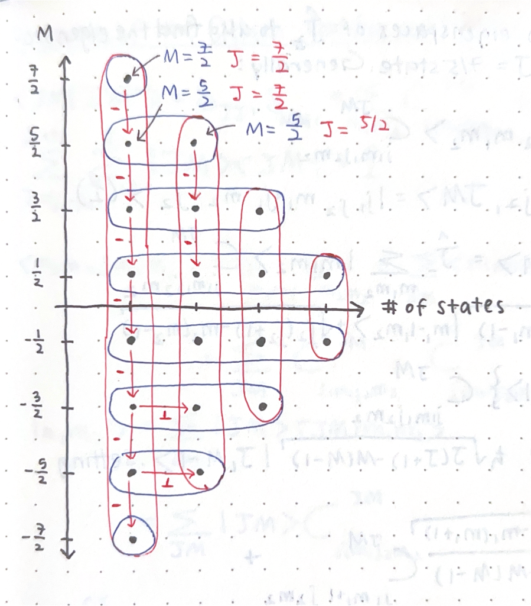

Addition of Angular Momenta
A Simple Example
Let's start with a very simple example before generalizing to all cases. Say that we have two particles, \(S_1\) and \(S_2\). We only care about internal degrees of freedom in this case, and say that both particles are spin \(\frac{1}{2}\).\[\begin{align} H_1 &= \text{span}\{|\frac{1}{2}, \pm \frac{1}{2}\rangle\} = \text{span}\{|\pm\rangle\} \\ H_2 &= \text{span}\{|\pm\rangle\} \\ H_S &= H_1 \otimes H_2, \text{ dim}(H_S) = 4 \\ &= \text{span}\{|+\rangle_1 \otimes|+\rangle_2, |-\rangle_1 \otimes|+\rangle_2, |+\rangle_1 \otimes|-\rangle_2, |-\rangle_1 \otimes|-\rangle_2\} \\ &= \text{span}\{|++\rangle, |-+\rangle, |+-\rangle, |--\rangle\} \end{align}\] Right now, since we're only concerned with intrinsic spin, total angular momentum \(\hat{\vec J}\) and total spin \(\hat{\vec S}\) are interchangeable, there is no orbital angular momentum.
Using concepts we introduced at the end of our discussion of tensor products, the operator that measured the total angular momentum (and spin in our case) of the entire system is: \[\hat{\vec J} = \hat{\vec J_1}\otimes\hat 1 + \hat 1\otimes \hat{\vec J_2}\] where \(\hat{\vec J_1}\) and \(\hat{\vec J_2}\) measure the total angular momentum for each subsystem. We also know from last semester that \(\hat{\vec J^2_1}\), \(\hat{\vec J^2_2}\), \(\hat{\vec J_{1z}}\), and \(\hat{\vec J_{2z}}\) all commute. We want to find a basis for \(H_S\) where the total angular momentum (\(J\)) and its projection (\(M\)) are well defined. Note that \(J\) and \(M\) are analogous to the \(j\) and \(m\) eigenvalues when we previously discussed angular momentum; they just apply to the entire system, not just one particle.
In our current basis, \(\hat J_z\) is already diagonal: \[\begin{align} \hat J_z &= \hat J_{1z}\otimes\hat 1 + \hat 1 \otimes \hat J_{2z} \\ \hat J_z |\sigma_1, \sigma_2\rangle &= (\hat J_{1z}\otimes\hat 1 + \hat 1 \otimes \hat J_{2z})(|\sigma_1\rangle \otimes|\sigma_2\rangle) \\ &= \hat J_{1z}|\sigma_1\rangle\otimes\hat 1|\sigma_2\rangle + \hat 1|\sigma_1\rangle\otimes\hat J_{2z}|\sigma\rangle \\ &= \hbar\sigma_1|\sigma_1\rangle\otimes|\sigma_2\rangle + |\sigma_1\rangle\otimes\hbar\sigma_2|\sigma_2\rangle \\ &= \hbar(\sigma_1 + \sigma_2)|\sigma_1\sigma_2\rangle \end{align}\] (a matrix is diagonal in a basis if all the basis vectors are eigenvectors) and \(M = \sigma_1 + \sigma_2\), which means that, because \(\sigma_1\) and \(\sigma_2\) can be \(\pm\frac{1}{2}\), \(M = -1, 0, 1\).
The eigenvalue \(M = 1\) corresponds to the single basis vector \[|\sigma_1 = \frac{1}{2}, \sigma_2 = \frac{1}{2}\rangle = |\frac{1}{2}, \frac{1}{2}\rangle \otimes|\frac{1}{2}, \frac{1}{2}\rangle = |++\rangle\] and the eigenvalue \(M = -1\) corresponds to the single basis vector: \[|\sigma_1 = -\frac{1}{2}, \sigma_2 = -\frac{1}{2}\rangle = |--\rangle\] (Note that \(|\sigma_1 \sigma_2\rangle\) is shorthand for \(|j_1, \sigma_1\rangle \otimes|j_2, \sigma_2\rangle = |\frac{1}{2}, \sigma_1\rangle \otimes|\frac{1}{2}, \sigma_2\rangle\).) Their corresponding eigenspaces, then, are one dimensional.
This is great, because we know that \([\hat J^2, \hat J_z] = 0\), and so they share a common basis of eigenvectors. We can find an eigenvector of \(\hat J^2\) in each of the eigenspaces of \(\hat J_z\), and doing that is easy if the eigenspace is one dimensional. As a result, we know that \(|++\rangle\) and \(|--\rangle\) are also eigenvectors of \(\hat J^2\). But what are their eigenvalues? To verify, we need to first figure out what \(\hat J^2\) does: \[\begin{align} \hat J^2 &= (\hat{J_1} + \hat{J_2})^2 = \hat J_1^2 + \hat J_2^2 + 2\hat J_1 \cdot \hat J_2 \\ 2\hat J_1 \cdot \hat J_2 &= 2(\hat J_{1x}\hat J_{2x} + \hat J_{1y}\hat J_{2y} + \hat J_{1z}\hat J_{2z}) \\ \hat J_\pm &= \hat J_x \pm i\hat J_y \to \hat J_{x} = \frac{1}{2}(\hat J_{+} + \hat J_{-}), \quad \hat J_{y} = -\frac{i}{2}(\hat J_{+} - \hat J_{-}) \\ \hat J_{1x} \hat J_{2x} &= \frac{1}{2}(\hat J_{1+} + \hat J_{1-}) \cdot \frac{1}{2}(\hat J_{2+} + \hat J_{2-}) =\frac{1}{4} \left( J_{1+} J_{2+} + J_{1+} J_{2-} + J_{1-} J_{2+} + J_{1-} J_{2-} \right) \\ \hat J_{1y} \hat J_{2y} &= \left(-\frac{i}{2}(\hat J_{1+}-\hat J_{1-})\right) \left(-\frac{i}{2}(\hat J_{2+}-\hat J_{2-})\right) \\ &= \frac{(-i)(-i)}{4} (\hat J_{1+}-\hat J_{1-})(\hat J_{2+}-\hat J_{2-}) \\ &= -\frac{1}{4} \left( \hat J_{1+} \hat J_{2+} - \hat J_{1+} \hat J_{2-} - \hat J_{1-} \hat J_{2+} + \hat J_{1-} \hat J_{2-} \right) \\ \hat J_{1x} \hat J_{2x} + \hat J_{1y} \hat J_{2y} &= \frac{1}{2} \left( \hat J_{1+} \hat J_{2-} + \hat J_{1-} \hat J_{2+} \right) \\ \hat J^2 &= \hat J_1^2 + \hat J_2^2 + ( \hat J_{1+} \hat J_{2-} + \hat J_{1-} \hat J_{2+} ) + 2 \hat J_{1z}\hat J_{2z} \\ \end{align}\] and then apply: \[\begin{align} \hat J^2 |++\rangle &= (\hat J_1^2 + \hat J_2^2 + \hat J_{1+} \hat J_{2-} + \hat J_{1-} \hat J_{2+} + 2 \hat J_{1z}\hat J_{2z} )(|+\rangle \otimes |+\rangle) \\ &= \hbar^2 \frac{3}{4}|++\rangle + \hbar^2 \frac{3}{4}|++\rangle + 0 + 0 + 2 (\frac{\hbar^2}{4}|++\rangle) \\ &= \hbar^2(\frac{3}{4} + \frac{3}{4} + \frac{1}{2})|++\rangle \\ &= 2\hbar^2|++\rangle = \hbar^2 J(J+1)|++\rangle \\ J &= 1 \end{align}\] and similar for \(|--\rangle\). If I had to guess, there was probably an easier way to do that...?
To find all of the eigenvectors of \(\hat J^2\), we can start at the known eigenvalue \(|++\rangle\) and apply the ladder operator \(\hat J_-\) repeatedly, since ladder operators transform one eigenvector of \(\hat J^2\) to a different eigenvector of \(\hat J^2\) with the same eigenvalue, \(j\). I sort of glossed over its usage in the passage above, but: \[\hat J_- = \hat J_{1-} + \hat J_{2-} = \hat J_{1-}\otimes \hat 1 + \hat 1 \otimes \hat J_{2-}\] \[\begin{align} \hat J_-|++\rangle &\to \frac{1}{\hbar \sqrt{2 - M(M-1)}}\hat J_-|++\rangle \text{ (normalized)} \\ &= \frac{1}{\hbar\sqrt{2}}(\hat J_{1-}\otimes \hat 1 + \hat 1 \otimes \hat J_{2-})(|+\rangle\otimes|+\rangle) \\ &= \frac{1}{\hbar\sqrt{2}} \hbar(|-\rangle\otimes|+\rangle + |+\rangle\otimes|-\rangle) \\ &= \frac{|+-\rangle + |-+\rangle}{\sqrt 2} \end{align}\] Thus \(\frac{|+-\rangle + |-+\rangle}{\sqrt 2}\) is also an eigenvector of \(\hat J^2\) with the same value of \(J=1\), but a value of \(M=0\), since \(\hat J_-\) decrements the value of \(M\). Applying \(\hat J_-\) one more time yields \(|--\rangle\): \[\begin{align} \hat J_-\frac{|+-\rangle + |-+\rangle}{\sqrt 2} &\to \frac{1}{\hbar \sqrt{2 - M(M-1)}}\hat J_-\frac{|+-\rangle + |-+\rangle}{\sqrt 2} \text{ (normalized)} \\ &= \frac{1}{\hbar \sqrt{2}}(\hat J_{1-}\otimes \hat 1 + \hat 1 \otimes \hat J_{2-})\frac{|+-\rangle + |-+\rangle}{\sqrt 2} \\ &= \frac{1}{2\hbar}(\hbar|--\rangle + 0 + 0 + \hbar|--\rangle) \\ &= |--\rangle \end{align}\] and we are clearly unable to apply \(\hat J_-\) again. Similarly, we are clearly unable to apply \(\hat J_+\) to the state \(|++\rangle\), so we know we've found all the eigenvectors for \(J=1\). So, the three eigenvectors of \(\hat J^2\) are: \[\begin{align} \text{For } &|j_1, j_2; J, M\rangle \\ &|\frac{1}{2}, \frac{1}{2}; 1, 1\rangle = |++\rangle \\ &|\frac{1}{2}, \frac{1}{2}; 1, 0\rangle = \frac{|+-\rangle + |-+\rangle}{\sqrt 2} \\ &|\frac{1}{2}, \frac{1}{2}; 1, -1\rangle = |--\rangle \\ \end{align}\] But! Given that \(H_S = H_1 \otimes H_2\) and both \(H_1\) and \(H_2\) are of dimension 2, we know that \(H_2\) is a four dimensional space, and we know that there are four orthogonal eigenvectors of \(\hat J_z\) (which are \(|++\rangle, |+-\rangle, |-+\rangle, |--\rangle\)) that span the Hilbert space for the entire system. We have only found three orthogonal eigenvectors of \(\hat J^2\), so there must be a fourth!
Since the \(M=0\) eigenspace was two dimensional but we only found one eigenvector that belongs in the \(J=1\) eigenspace there, our missing basis vector must be orthogonal to the one that we did find. That vector is (apparently evidently) \(\frac{|+-\rangle - |-+\rangle}{\sqrt 2}\). But what is it?
If we apply \(\hat J_+\) to it, we get: \[\begin{align} \hat J_+ \frac{|+-\rangle - |-+\rangle}{\sqrt 2} &= \frac{1}{\sqrt 2}(\hat J_{1+}|+\rangle\otimes|-\rangle + |+\rangle\otimes \hat J_{2+}|-\rangle - (\hat J_{1+}|-\rangle\otimes|+\rangle + |-\rangle\otimes\hat J_{2+}|+\rangle)) \\ &= \frac{1}{\sqrt 2}(0 + |++\rangle - (|++\rangle + 0)) \\ &= 0 \end{align}\] And if we apply \(\hat J_-\) to it, we get: \[\begin{align} \hat J_- \frac{|+-\rangle - |-+\rangle}{\sqrt 2} &= \frac{1}{\sqrt 2}(\hat J_{1-}|+\rangle\otimes|-\rangle + |+\rangle\otimes \hat J_{2-}|-\rangle - (\hat J_{1-}|-\rangle\otimes|+\rangle + |-\rangle\otimes\hat J_{2-}|+\rangle)) \\ &= \frac{1}{\sqrt 2}(|--\rangle + 0 - (0 + |--\rangle)) \\ &= 0 \end{align}\] So \(\frac{|+-\rangle - |-+\rangle}{\sqrt 2}\) is an eigenvector of \(\hat J^2\) where \(J=0\), and of course, as it is in the \(M=0\) eigenspace, it is an eigenvector of \(\hat J_z\) where \(M=0\). To be extra sure, we can apply our expression for \(\hat J^2\) to \(\frac{|+-\rangle - |-+\rangle}{\sqrt 2}\) and show that it is indeed an eigenvector with \(J=0\), but I don't really want to do that right now.
In general, for a fixed \(j_1\) and \(j_2\) for two subsystems, the total system's Hilbert space covers the eigenspaces of \(\hat J^2\) for \(J = |j_1-j_2|, |j_1-j_2| + 1, \cdots, j_1 + j_2\). In our case, since we said each subsystem has \(j = \frac{1}{2}\), \(J=0, 1\), which was indeed what we found.
The Generalized Case
If we want to discuss the generalized process for adding angular momenta, we cannot have any restrictions on \(H_1\) or \(H_2\) like we did in our simple example. The most we can say is that: \[H_1 = \text{span}\{|k_1, j_1, m_1\}_{k_1, j_1, m_1} = \bigoplus_{k_1, j_1}H_{k_1,j_1}\] and similarly that \[H_2 = \text{span}\{|k_2, j_2, m_2\}_{k_2, j_2, m_2} = \bigoplus_{k_2, j_2}H_{k_2,j_2}\] Information on the direct sum of vector spaces can be found on last semester's site, but essentially the direct sum of vector spaces is also a vector space. Also note that in this case, a single space \(H_{k_i, j_i}\) is the Hilbert space where \(k_i\) and \(j_i\) are fixed and \(m_i\) varies: \[H_{k_i, j_i} = \text{span}\{|k_i, j_i, m_i\rangle_{m_i = -j_i,\cdots, j_i}\}, \text{ dim}(2j_i+1)\] In our simple example, \(j = \frac{1}{2}\) for each subsystem, so those Hilbert spaces were simply spanned by the range of \(m\), which was \(\pm\frac{1}{2}\). Also note that in our simple example, we only cared absout internal degrees of freedom (spin) so we used \(\sigma\) instead of \(m\).Once again, \(H_S = H_1\otimes H_2\). We can substitute the direct sum representation of \(H_1\) and \(H_2\) to get; \[\begin{align} H_S &= \left( \bigoplus_{k_1, j_1}H_{k_1,j_1} \right) \otimes \left( \bigoplus_{k_2, j_2}H_{k_2,j_2} \right ) \\ &= \bigoplus_{k_1, j_1, k_2, j_2} (H_{k_1, j_1}\otimes H_{k_2, j_2}) \end{align}\] where \(H_{k_1, j_1}\otimes H_{k_2, j_2} = \text{span}(|j_1, m_1\rangle \otimes |j_2, m_2\rangle)\) (where we leave the \(k\)'s implicit) and thus has dimension \((2j_1+1)(2j_2+1)\).
Just as before, we want to find the common eigenstates of \(\hat J^2\) and \(\hat J_z\), but now we know nothing about \(j_1\) or \(j_2\), not even that they're equal. The four operators \(\hat J^2_1, \hat J^2_2, \hat J_{1z}, \hat J_{2z}\) all still commute, and once again, \(\hat J_z\) is still diagonal in this space: \[\begin{align} \hat J_z &= \hat J_{1z}\otimes \hat 1 + \hat 1 \otimes \hat J_{2z} \\ \hat J_z (|j_1, m_1\rangle \otimes |j_2, m_2\rangle) &= \hat J_{1z}|j_1, m_1\rangle\otimes|j_2, m_2\rangle + |j_1, m_1\rangle\otimes \hat J_{2z}|j_2, m_2\rangle \\ &= \hbar m_1 |j_1, m_1\rangle \otimes |j_2, m_2\rangle + \hbar m_2 |j_1, m_1\rangle \otimes |j_2, m_2\rangle \\ &= \hbar(m_1 + m_2)|j_1, m_1\rangle \otimes |j_2, m_2\rangle \end{align}\] Recall that \(|j_1, m_1\rangle \otimes |j_2, m_2\rangle\) are the basis vectors of the space \(H_S\), and that if the eigenvectors of an operator are the basis vectors of a vector space, that operator is diagonal in that space. Clearly, also the eigenvalues of \(\hat J_z\) are \(M = m_1 + m_2\).
If we want to find the eigenvalues and eigenvectors of \(\hat J^2\), we can use a similar approach to our simple case and inspect the eigenspaces of \(\hat J_z\), but to do that, we need to know what they even look like. Let's start with an example:
If \(j_1=2\), then \(H_1\) is five dimensional, as \(m_1=-2, -1, 0, 1, 2\). If \(j_2=\frac{3}{2}\), then \(H_2\) is four dimensional, as \(m_2=-\frac{3}{2}, -\frac{1}{2}, \frac{1}{2}, \frac{3}{2}\). That means \(H_S\) is 20-dimensional.
Because \(M = m_1 + m_2\), and the possible values of \(m_1\) and \(m_2\) are restricted by \(j_1\) and \(j_2\), we can write \(M = -(j_1+j_2), \cdots, -|j_1-j_2|, |j_1-j_2|,\cdots, j_1+j_2\).
The state \(|j_1=2, m_1=2\rangle \otimes |j_2=\frac{3}{2}, m_2=\frac{3}{2}\) has an \(M=2+\frac{3}{2}=\frac{7}{2}\). It is, in fact, the only two states that can have \(M=\frac{7}{2}\), and so this eigensace has a dimension of 1. On the other hand, two other states can have \(M=\frac{5}{2}: |2, 2\rangle\otimes|\frac{3}{2},\frac{1}{2}\rangle\), or \(|2, 1\rangle\otimes|\frac{3}{2},\frac{3}{2}\rangle\), and these clearly are basis vectors of \(H_S\), so this eigenspace has a dimension of 2.
We can see all possible values of \(M\) and the size of each eigenspace in the diagram below:

Here, each point represents a different total state as defined by \(m_1\) and \(m_2\), and the diagonal lines connect states that have the same value of \(M\).
Note how the eigenspaces with the most states, and so the highest dimensionality, are the eigenspaces for \(M=\pm\frac{1}{2}\), which are the \(M\)'s that are the smallest in magnitude. The eigenspaces with the least states and so the lowest dimensionalities, are the eigenspaces for \(M=\pm\frac{7}{2}\), which are the \(M\)'s with the largest magnitude possible. The dimensionality of the eigenspaces between change at a steady rate.Just like last time, we know that if we find a one dimensional eigenspace of \(\hat J_z\), then it must also be a one dimensional eigenspace of \(\hat J^2\), since the two operators commute. It might already be obvious which one that is, but let's represent the dimensionality of each subspace as a sort of histogram, to make things even easier:

First, just consider the points on this plot, which show the dimensionality of each eigenspace of \(M\).
As mentioned before, the \(M =\pm\frac{7}{5}\) eigenspaces have dimensionality of 1, and the \(M=\pm\frac{1}{2}\) eigenspaces have a dimensionality of 4.
Do note that the points on this diagram do NOT represent the same states as the dots in the previous diagram. Each dot on the this diagram represents a dimension, and so implicitly represents a linear combination of the states shown in the previous diagram.
Each horizontal grouping of points on this diagram represents an eigenspace that corresponds to a single value of \(M\); this is marked in blue.
Each vertical grouping of points on this diagram represents an eigenspace that corresponds to a single value of \(J\); this is marked in red.
These vertical groupings are formed via the same process that we did in our simple example: we apply the ladder operators to move within the eigenspace for some \(J\) while obtaining new eigenvectors with different values of \(M\).
Specifically, we would identify that the \(M=\frac{7}{2}\) eigenspace is one dimensional and apply the \(\hat J_-\) operator until all 8 eigenvectors in the subspace for \(J=\frac{7}{2}\) are found. We would find that we can only use the ladder operators in this eigenspace of \(\hat J^2\) to obtain \(M=\frac{7}{2},\frac{5}{2},\cdots,-\frac{5}{2},-\frac{7}{2}\), from which we can demonstrate that \(J=\frac{7}{2}\) in this eigenspace. Then we would use orthogonality to "hop" into the \(J = \frac{5}{2}\) eigenspace, taking advantage of the fact that the \(M=\frac{5}{2}\) eigenspace (or the \(M=-\frac{5}{2}\)) eigenspace is two dimensional, and repeat the process of "uncovering" the eigenspace via ladder operators.
There are a couple things of note:
- A single eigenspace of \(\hat J^2\) that corresponds to some \(J\) is \(2J+1\)-dimensional, since that is the number of eigenvectors in that eigenspace.
- The value of \(J\) for a particular eigenspace of \(\hat J^2\) is, as we've seen, the maximum possible values of \(M\) obtainable via ladder operators. Due to the dimensionality of the eigenspaces of \(\hat J_z\), the possible values of \(J\) within the entire Hilbert space \(H_S\) are all of the positive possible values of \(M\): \(|j_1-j_2|,\cdots,j_1+j_2\).
-
The total Hilbert space \(H_S\) was defined earlier as \(H_S = \bigoplus_{k_1, j_1, k_2, j_2}\left( H_{k_1, j_1}\otimes H_{k_2, j_2}\right)\).
Our example only has one possible value for \(j_1\) and \(j_2\), which means we know that a single \(H_{k_1, j_1}\otimes H_{k_2, j_2}\) is made up of eigenspaces of \(\hat J^2\) that vary in dimensionality.
Or, in other words:
\[H_{k_1, j_1}\otimes H_{k_2, j_2} = \bigoplus_{J=|j_1-j_2|}^{j_1+j_2}H_J\]
In fact, you can arrange the Wigner D-matrices \(D(\mathbb R)\) according to these eigenspaces to get a matrix that looks (according to our example) roughly like:
Where the white regions of the matrix are 0's only, and each of the black regions are sub-matrices within the eigenspaces as labelled. I don't really understand this part fully though, to be entirely honest.
The Recurrence Relation for the Clebsch-Gordan Coefficients
Doing the above generalized case actually yields a recursive definition for the Clebsch-Gordan coefficient as follows:We know that a state \(|j_1, j_2; J, M\rangle\) can be written as linear combination \[\sum_{m_1, m_2}|j_1, j_2, m_1, m_2\rangle C^{JM}_{j_1, m_1, j_2, m_2}\] Let's represent our eigenvector in the one dimensional eigenspace as \(|j_1, j_2; J, M\rangle\). Because we're considering the "upper" one dimensional eigenspace, we know that \(J=M=j_1+j_2\), or that \(J\) and \(M\) are as large as possible. The only way that this happens is when \(m_1 = j_1\) and \(m_2=j_2\). Then, our state is: \[|j_1, j_2; J, M\rangle = \sum_{m_1, m_2}|j_1, j_2, m_1, m_2\rangle C^{JM}_{j_1, m_1, j_2, m_2} = |j_1, j_2, j_1, j_2\rangle (1)\] (the coefficient must be 1 because that is the only state in this space!) and we can then apply the ladder operator \(\hat J_-\). Generically, we do this in the following way (note that I omit the \(j_1, j_2\) in my kets so things don't get too long): \[\begin{align} \hat J_-|J, M\rangle &= \hbar\sqrt{J(J+1) - M(M-1)}|J, M-1\rangle \\ &= (\hat J_{1-}\otimes\hat 1 + \hat 1 \otimes\hat J_{2-})\sum_{m_1, m_2}|m_1, m_2\rangle C^{JM}_{j_1, m_1, j_2, m_2} \\ &= \sum_{m_1, m_2}(\hat J_{1-}\otimes\hat 1 + \hat 1 \otimes\hat J_{2-})|m_1, m_2\rangle C^{JM}_{j_1, m_1, j_2, m_2} \\ &= \sum_{m_1, m_2}(\hat J_{1-}|m_1\rangle \otimes|m_2\rangle + |m_1\rangle \otimes\hat J_{2-}|m_2\rangle) C^{JM}_{j_1, m_1, j_2, m_2} \\ \hbar\sqrt{J(J+1) - M(M-1)}|J, M-1\rangle &= \sum_{m_1, m_2} (\hbar\sqrt{j_1(j_1+1)-m_1(m_1-1)}|m_1-1, m_2\rangle + \hbar\sqrt{j_2(j_2+1)-m_2(m_2-1)}|m_1, m_2-1\rangle) C^{JM}_{j_1, m_1, j_2, m_2} \\ \sqrt{J(J+1) - M(M-1)}|J, M-1\rangle &= \sum_{m_1, m_2} (\sqrt{j_1(j_1+1)-m_1(m_1-1)}|m_1-1, m_2\rangle + \sqrt{j_2(j_2+1)-m_2(m_2-1)}|m_1, m_2-1\rangle) C^{JM}_{j_1, m_1, j_2, m_2} \\ &= \sum_{m_1, m_2} \sqrt{j_1(j_1+1)-m_1(m_1-1)}|m_1-1, m_2\rangle C^{JM}_{j_1, m_1, j_2, m_2} + \sum_{m_1, m_2} \sqrt{j_2(j_2+1)-m_2(m_2-1)}|m_1, m_2-1\rangle C^{JM}_{j_1, m_1, j_2, m_2} \\ \end{align}\] From here, say that we start using \(m_1'\) instead of \(m_1-1\) and using \(m_2'\) instead of \(m_2-1\), which means we also replace \(m_1\) with \(m_1'+1\) and \(m_2\) with \(m_2'+1\): \[\begin{align} \sqrt{J(J+1) - M(M-1)}|J, M-1\rangle &= \sum_{m_1', m_2} \sqrt{j_1(j_1+1)-m_1'(m_1'+1)}|m_1', m_2\rangle C^{JM}_{j_1, m_1'+1, j_2, m_2} + \sum_{m_1, m_2'} \sqrt{j_2(j_2+1)-m_2'(m_2'+1)}|m_1, m_2'\rangle C^{JM}_{j_1, m_1, j_2, m_2'+1} \\ \end{align}\] and then "re-label" \(m_1'\) as \(m_1\) and \(m_2'\) as \(m_2\): \[\begin{align} \sqrt{J(J+1) - M(M-1)}|J, M-1\rangle &= \sum_{m_1, m_2} \sqrt{j_1(j_1+1)-m_1(m_1+1)}|m_1, m_2\rangle C^{JM}_{j_1, m_1+1, j_2, m_2} + \sum_{m_1, m_2} \sqrt{j_2(j_2+1)-m_2(m_2+1)}|m_1, m_2\rangle C^{JM}_{j_1, m_1, j_2, m_2+1} \\ &= \sum_{m_1, m_2} \left(\sqrt{j_1(j_1+1)-m_1(m_1+1)} C^{JM}_{j_1, m_1+1, j_2, m_2} + \sqrt{j_2(j_2+1)-m_2(m_2+1)} C^{JM}_{j_1, m_1, j_2, m_2+1}\right) |m_1, m_2\rangle \\ &= \sum_{m_1, m_2} C^{JM-1}_{j_1, m_1, j_2, m_2} |m_1, m_2\rangle \end{align}\] Thus we see that a Clebsch-Gordan coefficient \(C^{JM-1}_{j_1, m_1, j_2, m_2}\) is built from some of the Clebsch-Gordan coefficients for \(J. M\). This is part of the total recurrence relation, the whole thing looks like: \[ C^{J M \pm 1}_{j_1, m_1, j_2, m_2} = \sqrt{\frac{j_1(j_1+1) - m_1(m_1\mp 1)}{J(J+1) - M(M\pm 1)}} C^{JM}_{j_1, m_1\mp 1 j_2, m_2} + \sqrt{\frac{j_2(j_2+1) - m_2(m_2\mp 1)}{J(J+1) - M(M\pm 1)}} C^{JM}_{j_1, m_1 j_2, m_2\mp 1} \] where the other half is, of course, a result of appliny \(\hat J_+\) instead of \(\hat J_-\). Note that if the \(C^{JM}_{j_1, m_1, j_2, m_2}\) are real, then so are the \(C^{JM-1}_{j_1, m_1, j_2, m_2}\).
The orthogonal complement would be \(|J' J'\rangle = \sum_{m_1, m_2}|m_1, m_2\rangle C^{J'J'}_{j_1, m_1, j_2, m_2}\) and by convention (and to make this orthonormalization unique), we make the coefficient for the state with the largest value of \(m_1\) real and positive.